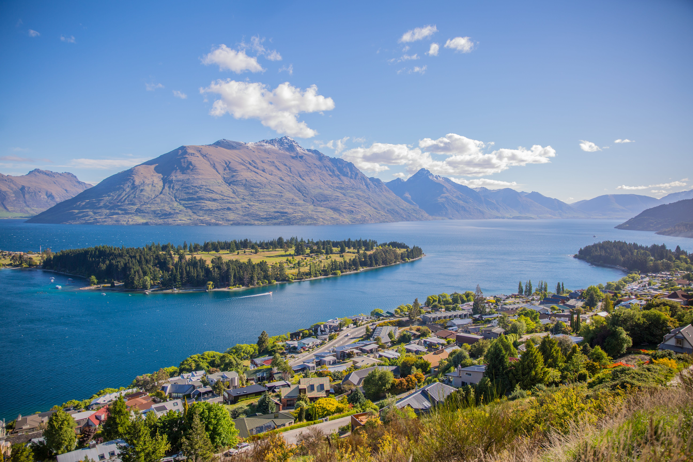
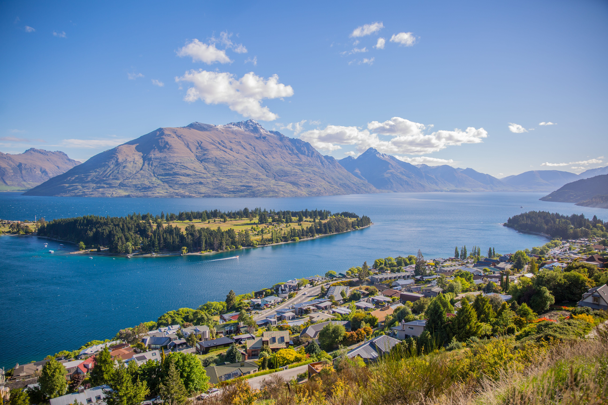

Oceania
Calidad de Vida y Entorno Natural Prístino: Oceanía, con sus países como Australia y Nueva Zelanda, ofrece una calidad de vida excepcional en un entorno natural prístino. Emigrar a esta región significa disfrutar de ciudades modernas y cosmopolitas, al tiempo que tienes acceso a paisajes impresionantes que van desde playas vírgenes hasta selvas tropicales exuberantes. La conexión con la naturaleza y el aire limpio contribuyen a una experiencia de vida equilibrada y saludable.
 

Calidad de Vida y Entorno Natural Prístino: Oceanía, con sus países como Australia y Nueva Zelanda, ofrece una calidad de vida excepcional en un entorno natural prístino. Emigrar a esta región significa disfrutar de ciudades modernas y cosmopolitas, al tiempo que tienes acceso a paisajes impresionantes que van desde playas vírgenes hasta selvas tropicales exuberantes. La conexión con la naturaleza y el aire limpio contribuyen a una experiencia de vida equilibrada y saludable.
Cultura Diversa y Comunidad Acogedora: A pesar de ser geográficamente distante, Oceanía acoge una diversidad cultural fascinante, con influencias de poblaciones indígenas y migrantes de todo el mundo. Emigrar a esta región significa sumergirse en una cultura vibrante y en comunidades acogedoras. La actitud relajada y amigable de la gente local crea un ambiente propicio para la integración y el establecimiento de conexiones significativas.